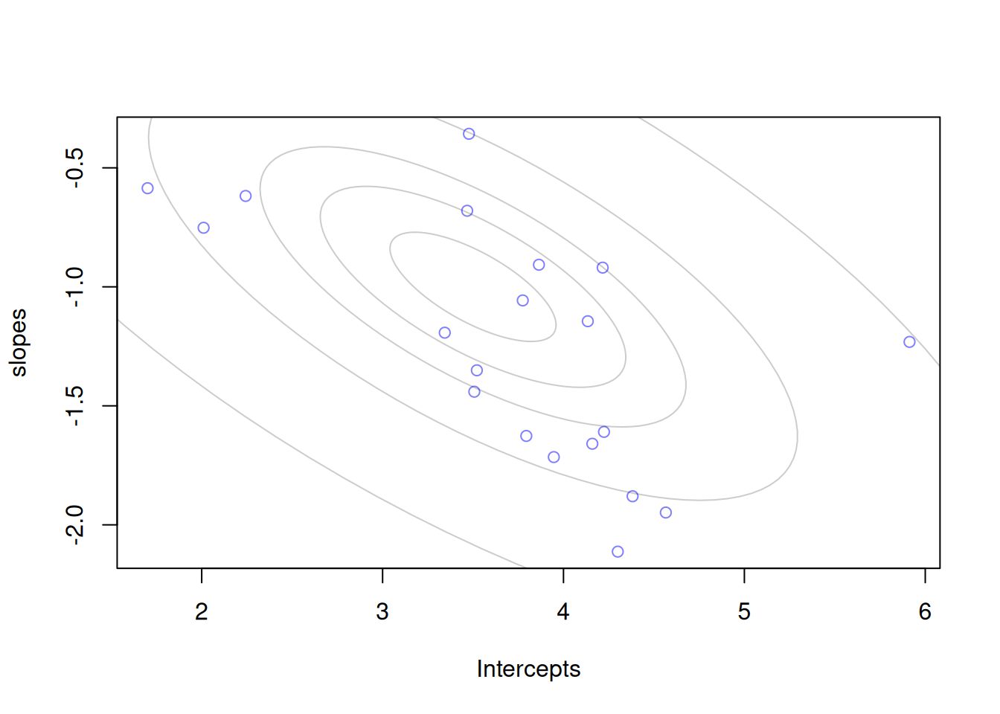
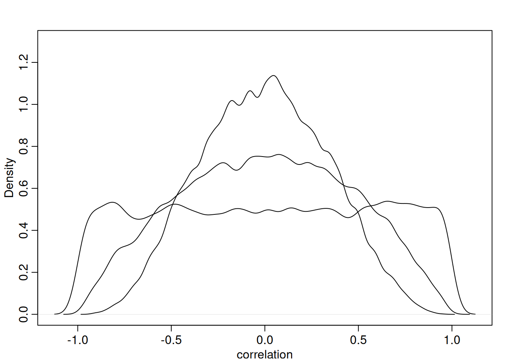
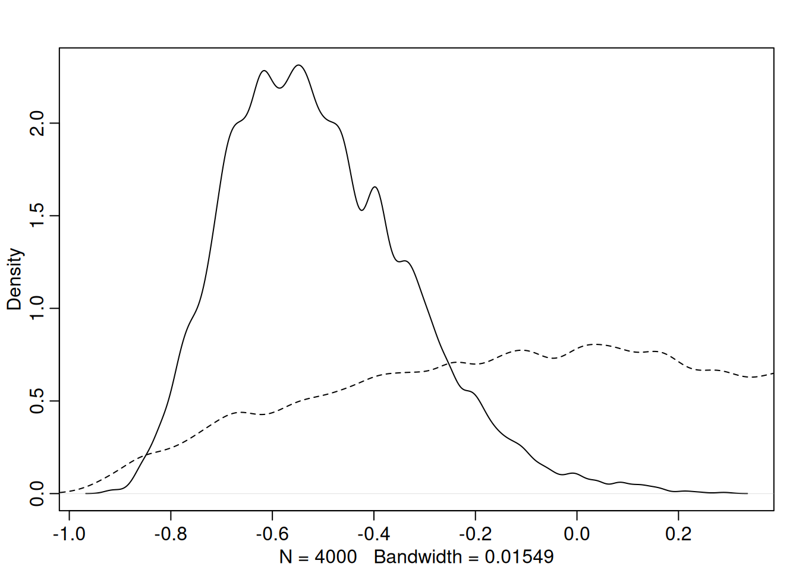
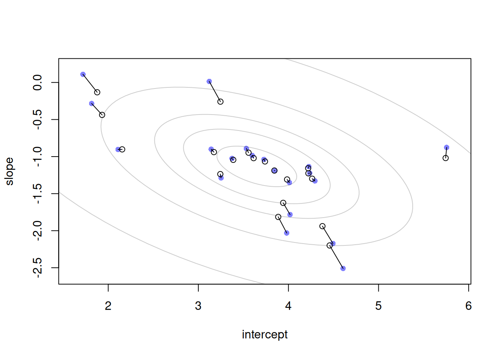
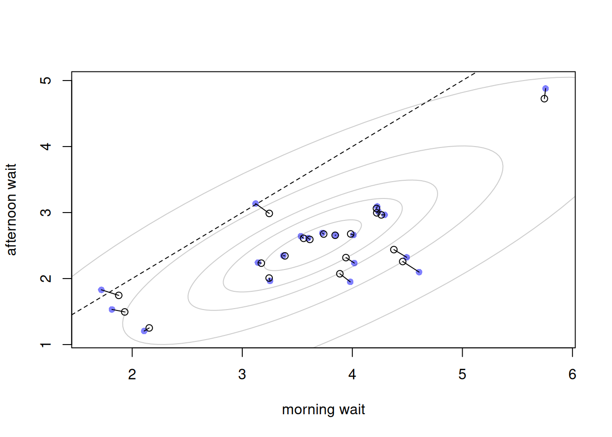

Code
library(rethinking)
library(dagitty)
library(tidyverse)
library(cmdstanr)
# rstudioapi::getActiveDocumentContext()$path |> dirname() |> setwd()library(rethinking)
library(dagitty)
library(tidyverse)
library(cmdstanr)
# rstudioapi::getActiveDocumentContext()$path |> dirname() |> setwd()Consider the simple model:
\[\mu_i = \alpha_{\text{CAFE}_i} + \beta_{\text{CAFE}_i} A_i\]
where \(A_i\) is an indicator variable for if we are in the afternoon. If we are modeling wait times are cafes, and we have the above model, it is basically telling us the average wait time for $A_i = 1 $ the afternoon, or \(A_i = 0\), the morning. So the intercept (\(\alpha\)) is the average wait time in the morning, and the slope is the difference to get to the afternoon wait time (\(\text{Afternoon} = \alpha + \beta\))
The thing is, there is probably some correlation between these two wait times. Cafes that are busy in the morning are usually busy in the afternoon. So we can actually model this correlation in our varying intercept/slope model.
Let’s define some data that we can simulate from:
a <- 3.5 # average morning wait time
b <- -1 # average difference between afternoon wait time
sigma_a <- 1 # std dev in intercepts
sigma_b <- 0.5 # std dev in slopes
rho <- -0.7 # correlation between slope and interceptThe covariance matrix is defined as:
\[\begin{bmatrix} \sigma^2_\alpha & \sigma_\alpha \sigma_\beta \rho \\ \sigma_\alpha \sigma_\beta \rho & \sigma^2_\beta \\ \end{bmatrix}\]cov_ab <- sigma_a * sigma_b * rho
Sigma <- matrix(c(sigma_a^2, cov_ab, cov_ab, sigma_b^2), ncol=2)
N_cafes <- 20
set.seed(5)
vary_effects <- MASS::mvrnorm(N_cafes, c(a,b), Sigma)
a_cafe <- vary_effects[,1]
b_cafe <- vary_effects[,2]
plot(a_cafe, b_cafe, col=rangi2, xlab='Intercepts', ylab='slopes')
# overlay population distribution
for (l in c(0.1, 0.3, 0.5, 0.8, 0.99)){
lines(ellipse::ellipse(Sigma, centre=c(a,b), level=l),
col=col.alpha('black', 0.2))
}
Quick detour into the def of covariance:
We all know \(\text{cov}(x,y) = E(xy) - E(x)E(y)\). So this is really just the difference between the average product and the product of the averages. We could of course center \(x\) and \(y\) such that \(\text{cov}(x,y) = E(xy)\). We can do the same with the variances too. Now, where does \(\rho\) come from? \(\rho\) is the ratio of the covariance to the maximum that the covariance could theoretically ever be: \(\sqrt{\text{var}(x) \text{var}(y)}\).
Where does this come from? Well if \(y = \beta x\), for some scalar \(\beta\) (can be anything), then the covariance is at its maximum. Think about it this way, \(x\) would be a perfect predictor of \(y\). There is no noise, they aren’t independent, in fact, they are as dependent as possible!
So if \(y= \beta x\) and we center, then \(\text{cov}(x,y) = E(xy) = \beta E(x^2)\) and \(\text{var}(x) \text{var}(y) = E(x^2) E(y^2) = \beta^2E(x^2)^2\). Then \(\text{cov}(x,y) = \sqrt{\text{var}(x) \text{var}(y)}\) - the max covariance. So we define \(\rho = \text{cov}(x,y) / \sqrt{\text{var}(x) \text{var}(y)}\)
a1 <- rnorm(100)
a2 <- a1 * 1.2
all.equal(cov(a1,a2), sqrt(var(a1)*var(a2)))[1] TRUENow let’s have the robot go and visit cafes 10 times each - 5 in the morning and 5 in the afternoon:
set.seed(22)
N_visits <- 10
afternoon <- rep(0:1, N_visits*N_cafes/2)
cafe_id <- rep(1:N_cafes, each=N_visits)
mu <- a_cafe[cafe_id] + b_cafe[cafe_id]*afternoon
sigma <- 0.5
wait <- rnorm(length(mu), mu, sigma)
d <- data.frame(cafe=cafe_id, afternoon=afternoon, wait=wait)
str(d)'data.frame': 200 obs. of 3 variables:
$ cafe : int 1 1 1 1 1 1 1 1 1 1 ...
$ afternoon: int 0 1 0 1 0 1 0 1 0 1 ...
$ wait : num 3.97 3.86 4.73 2.76 4.12 ...Let’s now build out the full model to estimate:
\[\begin{align} W_i &\sim \text{Normal}(\mu_i, \sigma) \\ \mu_i &= \alpha_{\text{CAFE}_i} + \beta_{\text{CAFE}_i} A_i \\ \\ \begin{bmatrix} \alpha_{\text{CAFE}} \\ \beta_{\text{CAFE}} \end{bmatrix} &\sim \text{MVNormal}(\begin{bmatrix} \alpha \\ \beta \end{bmatrix}, S ) \\ \\ S &= \begin{pmatrix} \sigma_\alpha & 0 \\ 0 & \sigma_\beta \end{pmatrix} R \begin{pmatrix} \sigma_\alpha & 0 \\ 0 & \sigma_\beta \end{pmatrix} \end{align}\]
For the correlation matrix \(R\), we’ll use the typical LKJcorr prior. Specifically one where \(\eta = 2\). Recall that is \(\eta = 1\), we are completely flat and allow equal weighting to all correlations between -1 and 1. For \(\eta = 2\), we are skeptical about large correlations:
for (e in c(1,2,4)){
R <- rlkjcorr(1e4, K=2, eta=e)
if (e == 1) dens(R[,1,2], xlab='correlation', ylim=c(0,1.3)) else dens(R[,1,2], add=T)
}
Let’s now fit the model:
# m14.1 <- ulam(alist(
# wait ~ normal(mu, sigma),
# mu <- a_cafe[cafe] + b_cafe[cafe] * afternoon,
# c(a_cafe, b_cafe) ~ multi_normal(c(a,b), Rho, sigma_cafe),
# a ~ normal(5,2),
# b ~ normal(-1,0.5),
# sigma_cafe ~ exponential(1),
# sigma ~ exponential(1),
# Rho ~ lkj_corr(2)
# ), data=d, chains=4, cores=4)mod <- cmdstan_model('mod_14.1.stan')
fit <- mod$sample(
data = list(
N = nrow(d),
N_cafe = max(d$cafe),
cafe = d$cafe,
afternoon = d$afternoon,
wait = d$wait
),
chains = 4,
parallel_chains = 4,
refresh = 500,
iter_warmup = 1e3, iter_sampling=1e3
)fit$summary('Rho') |> print(n=100)# A tibble: 4 × 10
variable mean median sd mad q5 q95 rhat ess_bulk ess_tail
<chr> <dbl> <dbl> <dbl> <dbl> <dbl> <dbl> <dbl> <dbl> <dbl>
1 Rho[1,1] 1 1 0 0 1 1 NA NA NA
2 Rho[2,1] -0.505 -0.528 0.181 0.181 -0.763 -0.182 1.00 1857. 2518.
3 Rho[1,2] -0.505 -0.528 0.181 0.181 -0.763 -0.182 1.00 1857. 2518.
4 Rho[2,2] 1 1 0 0 1 1 NA NA NA Let’s see what the prior tension is for the correlation matrix:
mod_rho <- fit$draws('Rho[2,1]', format='df') %>% pull('Rho[2,1]')
dens(mod_rho)
R <- rlkjcorr(1e4, K=2, eta=2)
dens(R[,1,2], add=T, lty=2)
Now let’s plot the estimates and their shrinkage:
full_draws <- fit$draws(format='df') %>% select(-starts_with('.'))Warning: Dropping 'draws_df' class as required metadata was removed.# compute unpooled estimates directly from data
a1 <- sapply( 1:N_cafes , function(i) mean(wait[cafe_id==i & afternoon==0]) )
b1 <- sapply( 1:N_cafes , function(i) mean(wait[cafe_id==i & afternoon==1]) ) - a1
# extract posterior means of partially pooled estimates
a2 <- full_draws %>% select(starts_with('ab_cafe')) %>% select(ends_with('1]')) %>% colMeans()
b2 <- full_draws %>% select(starts_with('ab_cafe')) %>% select(ends_with('2]')) %>% colMeans()
# plot both and connect with lines
plot( a1 , b1 , xlab="intercept" , ylab="slope" ,
pch=16 , col=rangi2 , ylim=c( min(b1)-0.1 , max(b1)+0.1 ) ,
xlim=c( min(a1)-0.1 , max(a1)+0.1 ) )
points( a2 , b2 , pch=1 )
for ( i in 1:N_cafes ) lines( c(a1[i],a2[i]) , c(b1[i],b2[i]))
mu_est <- full_draws %>% select(starts_with('mu_ab')) %>% colMeans()
rho_est <- full_draws %>% select(starts_with('Rho[1,2]')) %>% unlist() %>% mean()
sig_cafe <- full_draws %>% select(starts_with('sigma_cafe')) %>% colMeans()
Sigma <- diag(sig_cafe) %*% matrix(c(1, rho_est, rho_est, 1), ncol=2) %*% diag(sig_cafe)
for (l in c(0.1, 0.3, 0.5, 0.8, 0.99)){
lines(ellipse::ellipse(Sigma, centre=mu_est, level=l),
col=col.alpha('black', 0.2))
}
The blue points in the plot are the observed values and the open points are the shruken ones. Now lets display it on the outcome scale of wait times:
# convert varying effects to waiting times
wait_morning_1 <- (a1)
wait_afternoon_1 <- (a1 + b1)
wait_morning_2 <- (a2)
wait_afternoon_2 <- (a2 + b2)
# plot both and connect with lines
plot( wait_morning_1 , wait_afternoon_1 , xlab="morning wait" ,
ylab="afternoon wait" , pch=16 , col=rangi2 ,
ylim=c( min(wait_afternoon_1)-0.1 , max(wait_afternoon_1)+0.1 ) ,
xlim=c( min(wait_morning_1)-0.1 , max(wait_morning_1)+0.1 ) )
points( wait_morning_2 , wait_afternoon_2 , pch=1 )
for ( i in 1:N_cafes )
lines( c(wait_morning_1[i],wait_morning_2[i]) ,
c(wait_afternoon_1[i],wait_afternoon_2[i]) )
abline( a=0 , b=1 , lty=2 )
# we'll simulate the wait times to get contours to keep the data generating persepctive
# To truely undertand the uncertainty we should probably sample from the hyperparams too
# But we'll keep those fixed to keep it clean
v <- MASS::mvrnorm(1e4, mu_est, Sigma)
v[,2] <- v[,1] + v[,2] #calculate afternoon wait time
Sigma2 <- cov(v)
mu_est2 <- colMeans(v)
for (l in c(0.1, 0.3, 0.5, 0.8, 0.99)){
lines(ellipse::ellipse(Sigma2, centre=mu_est2, level=l),
col=col.alpha('black', 0.2))
}
The thing to catch here is that the shrinkage on the parameter scale has naturally made its way into shrinkage on the outcome scale.
Recall the chimp problem from lat chapter. We had different actors in different blocks with different treatments. Lots of effects to keep track of:
\[\begin{align} L_i &\sim \text{Binomial}(1, p_i) \\ \text{logit}(p_i) &= \gamma_{\text{TID}_i} + \alpha_{\text{ACTOR}_i,\text{TID}_i} + \beta_{\text{BLOCK}_i,\text{TID}_i} \end{align}\]